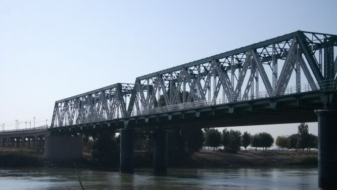
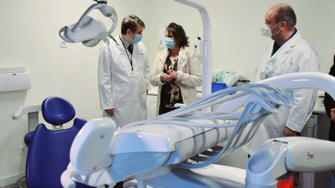

El Puente de Hierro será reversible

El perfil del contratante de la Junta de Andalucía ha publicado la
adjudicación de un estudio de viabilidad
para la implantación de un carril
reversible para
autobuses y vehículos de alta ocupación en el
puente de Hierro de San Juan de Aznalfarache.
Sigue leyendo
El centro de salud al 100%

A pleno rendimiento. Así funciona desde este miércoles el centro de salud de
San
Juan de Aznalfarache tras haber ido incorporando nuevos
servicios de
manera progresiva desde que se puso en marcha el pasado mes de junio.
Como colofón, la consejera de Salud y Consumo,
Catalina García,
ha descubierto hoy
una placa en un acto de inauguración en el que ha recorrido las
instalaciones en las que la Junta ha
invertido más de 2,5 millones, entre obra y equipamiento, y que incluyen
servicios de Urgencias, Fisioterapia,
consultas de Pediatría,
Odontología y rayos plenamente operativos.
Sigue leyendo